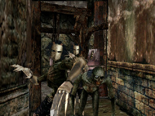
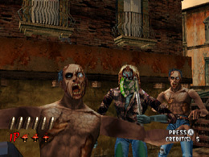
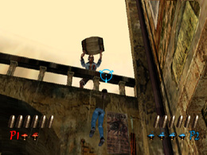

HOD2 アーケードモード
モード紹介
今回はHOD2の数あるゲームモードのなかでも
もっとも基本と呼べる“アーケードモード”についてです！
「むずかしくてクリアできなかったなぁ」
というアナタ！
HOD2には、アーケード版、ドリームキャスト版、Xbox版があるのですが、
今回のWii版では、これまでとは決定的に違う点があります。
それは、
「画面に照準が常に表示されている」
ということ！（もちろん、非表示にすることもできますよ）
画面に照準が表示されていることで、敵を格段に狙いやすくなりました。
今までクリアできなかったアナタも、この解説を読んで、もう1度チャレンジ
してみませんか？
【1】弱点である頭をねらう
敵の弱点は頭！！
武器で頭を隠していたり、仮面で頭が覆われていたりすることもありますが、
すべての敵の弱点は頭なのです！

こんな敵も、あんな敵も弱点は頭！
ステージ序盤は、敵の体力が低いため、頭以外でも倒すことができるかも
しれません。
しかし！ステージ後半にもなると、敵の体力も高くなるので、そうはいかなく
なってきます！
必ず頭をねらう！これが鉄則！
【2】倒す順番を考える
敵が複数現れた時は、倒す順番に注意！
やみくもに撃っていると、近づいた敵からダメージを受けてしまいます。
現れた順ではなく、近い敵から倒しましょう！

倒す順番を考えて！
【3】街の人を助けよう！
ゾンビに襲われている街の人は、積極的に助けましょう！
各ステージで助けた人数が一定数を越えると、ステージクリア時にライフが
1つ加算されます。
ただし、まちがえて街の人を撃ってしまうと、ライフが1つ減ってしまうので
注意が必要！

街の人を撃たないようにしながら、敵を撃つ！
【4】連射、そしてすばやいリロード！
先に進めるようになったけど、ステージ後半になると、つまってしまう…。
そんな時は、連射とすばやいリロードを心がけましょう！
特に、体力の高い敵が複数出現した時は、連射とすばやいリロードが
必須です！
ステージ後半になったら、Wiiリモコンをしっかり握って、連射！
（脇をしめると、照準がずれにくくなります。）
リロードする時は、手首を軽くスナップさせる！
（腕を振るのではなく、手首だけを動かすイメージです。）
これができれば、今まで進めなかったステージも進めるようになる…
はず！
最後に。
1番重要なポイントは、
「何度もチャレンジして、敵が出現するリズムをつかむ」
ということです。
あらかじめ敵がどの辺に出現するのか分かっていれば、敵が出現する前に、
テレビ画面のどの辺をポイントすればよいのか分かります。
ゲームオーバーになってもあきらめないで！何度もチャレンジしましょう！
あ、ボス攻略の方は、別ページにある「Ｇ」のページを参照してくださいね！
ではまた。
 RSS
RSS